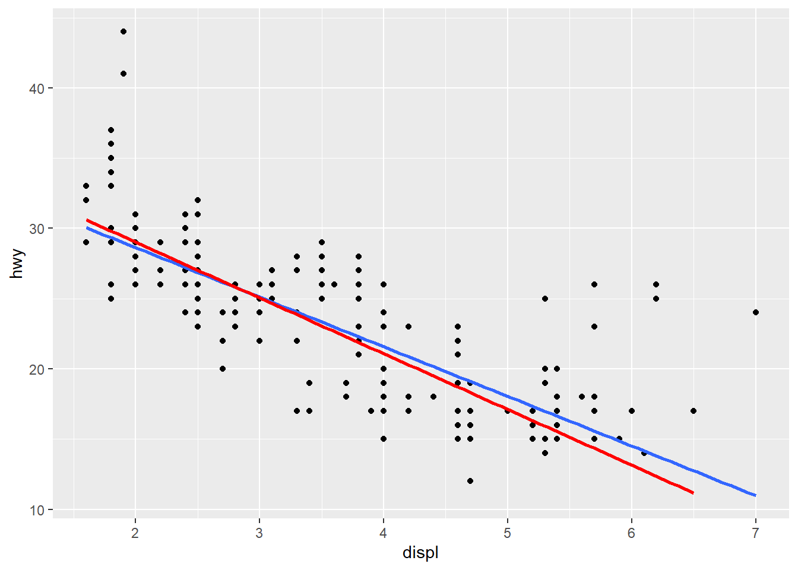

Chapter 20 Develop simple linear regression model
The general form of simple linear regression equation is \(y=\beta_0+\beta_1*x+\epsilon\). This implies two things. First, we are using the variation in x to explain variation in y. E.g., let y= students’ final grade of SCMA450, and x=lines of codes written by the students. Then the model implies that students’ SCMA450 final grade is different because of the number of lines they wrote during the study.
Second, one additional unit of x will always result in the same amount of change (i.e., quantifies by \(\beta_1\)). In the above example, each additional line of code written by the students will result in the same amount of improvement on their final grade. Such linear assumption works fine in many application and leads easy-to-understand interpretation. We will talk about how to address potential non-linear relationship in next chapter.
Back to the Boston house price example, we are trying to explain why the house price varies at Boston. We hypothesize that “lstat” (i.e., the percent of low income population in the neighborhood) may result in different house price: Houses located in “rich” area (i.e., lstat is low) would likely have higher price. To test this hypothesis, we can build a simple linear regression model as follow: \[medv=\beta_0+\beta_1*lstat+\epsilon\]
20.1 Estimation
The model estimation is to find the coefficient \(\beta_0\) and \(\beta_1\) to minimize the sum square error, which is known as the least square algorithm. Let’s illustrate the least square algorithm.
For a given lstat, based on the linear equation, we can compute the fitted value of medv according to: \[medvFit=\beta_0+\beta_1*lstat\] and the error term: \[error=medv-\beta_0-\beta_1*lstat\] We can better demonstrate the formula using the following tabular form:
## medv lstat medvFit error
## 1: 24.0 4.98 beta0+beta1*4.98 24-beta0-beta1*4.98
## 2: 21.6 9.14 beta0+beta1*9.14 21.6-beta0-beta1*9.14
## 3: 34.7 4.03 beta0+beta1*4.03 34.7-beta0-beta1*4.03
## 4: 33.4 2.94 beta0+beta1*2.94 33.4-beta0-beta1*2.94
## 5: 36.2 5.33 beta0+beta1*5.33 36.2-beta0-beta1*5.33
## 6: 28.7 5.21 beta0+beta1*5.21 28.7-beta0-beta1*5.21Given any value \(\beta_0\) and \(\beta_1\), based on the above formula in the table, we will get a series of fitted value and errors. We want to our model to best fit the data, meaning we want medvFit to be as close to medv and thus we want error to as small as possible. Thus, the best \(\beta_0\) and \(\beta_1\) should minimize the errors. The algorithm to find optimal \(\beta_0\) and \(\beta_1\) is called least square algoirthm. Mathematically, the least square algorithm will determine \(\beta_0\) and \(\beta_1\) to minimize the residual sum square (RSS): \[\min_{\beta_0,\beta_1} RSS=\sum_i(y_i-\beta_0-\beta_1x_i)^2\] here \(i\) is the index of different observations (i.e., the index of rows in the above table).
We do not to need to calcuate the optimal \(\beta_0\) and \(\beta_1\) mannually. The R code to estimate the above model is really simple.
##
## Call:
## lm(formula = medv ~ lstat, data = Boston)
##
## Coefficients:
## (Intercept) lstat
## 34.55 -0.95Here lm() is the function to estimate linear model. It takes two arguments: formula and data. medv~lstat represents the formula: medv is y-variable, with lstat as the x-variable. data=Boston specifies the dataset used.
We typically save the estimated results first and use summary() to get more information about the estimation.
##
## Call:
## lm(formula = medv ~ lstat, data = Boston)
##
## Residuals:
## Min 1Q Median 3Q Max
## -15.168 -3.990 -1.318 2.034 24.500
##
## Coefficients:
## Estimate Std. Error t value Pr(>|t|)
## (Intercept) 34.55384 0.56263 61.41 <2e-16 ***
## lstat -0.95005 0.03873 -24.53 <2e-16 ***
## ---
## Signif. codes: 0 '***' 0.001 '**' 0.01 '*' 0.05 '.' 0.1 ' ' 1
##
## Residual standard error: 6.216 on 504 degrees of freedom
## Multiple R-squared: 0.5441, Adjusted R-squared: 0.5432
## F-statistic: 601.6 on 1 and 504 DF, p-value: < 2.2e-16In fact, lm() function returns a list, and is saved into “fit1” as we defined. We can take a look at the elements in “fit1” list.
## [1] "coefficients" "residuals" "effects" "rank"
## [5] "fitted.values" "assign" "qr" "df.residual"
## [9] "xlevels" "call" "terms" "model"As seen, the fitted line is: \[medvFit=34.55-0.95*lstat\]
20.2 How to interpret the coefficient estimates?
The estimated coefficients (\(\beta_0\) and \(\beta_1\)) are actually random variables, because their value depends on the data and the data are typically from random sampling. In this example, if we happen to sample a different set of houses at Bonston, we may get different coefficient estimates.
Let’s illustrate that by randomly drawing 100 houses from the Boston dataset and re-estimate the model based on the sub-sample.
# Take 100 houses randomly from the Boston dataset
Boston_sample=Boston[sample(1:506, 100, replace=FALSE)]
# estimate coefficients based on the sub-sample
fit_sub=lm(formula=medv~lstat, data=Boston_sample)
# plot the sub-sample and fitted line
plot(Boston_sample$lstat, Boston_sample$medv)
points(Boston_sample$lstat, fitted(fit_sub), col="blue", type="l")
Each time we run the above code, we randomly generate a new dataset and obtain a new estimated regression line. In this example, although the sample is randomly drawn and thus different, the shope of the line is quite rubust. This is because there is a strong linear relationship between medv and lstat, and thus this relationship should sustain in the random sample. In this case, we says the coefficient lstat is significant.
Since the coefficient estimates are random variable, we can obtain their confidence interval as below:
## 2.5 % 97.5 %
## (Intercept) 33.448457 35.6592247
## lstat -1.026148 -0.8739505This means, with probability of 95%, \(\beta_1\) will be between -1.026148 and -0.8739505. Notice that, this interval does not contain 0, meaning that we are pretty sure the coefficient is not zero and has a consistent negative sign (i.e., the lstat has a significant impact on medv).
In particular, the p-value is particularly used to determine whether the coefficient is significantly different from 0. p-value < 5% is commonly considered that the coefficient is significantly different from 0.
We will only intercept the impact of significant independent variable on dependent variable, because, as mentioned, we cannot differentiate the impact of insignifcant variable from 0.
In this example, the estimated result suggests that: when lstat=0, then medv is 34.55; as lstat increases by 1, then medv will decreases on average by 0.95 (or 0.874~1.026).